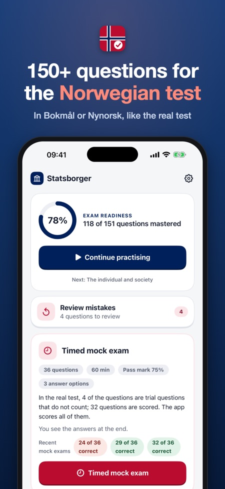
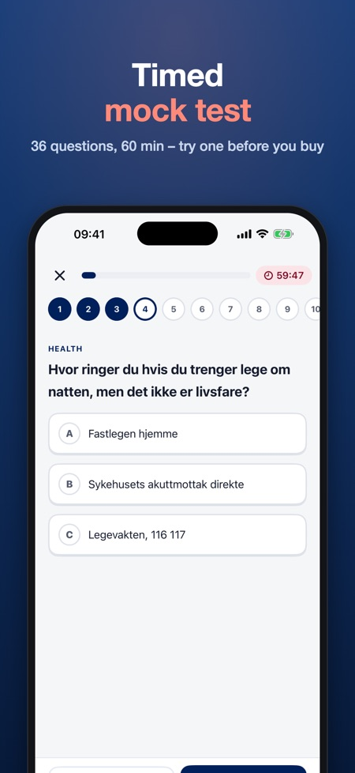
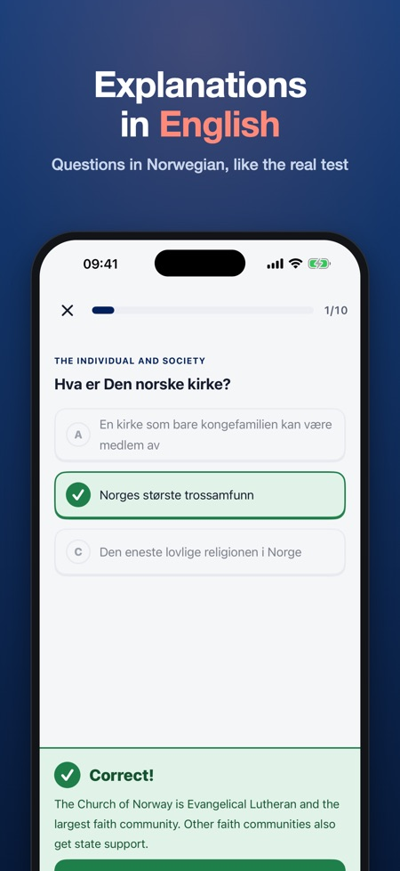

Mock exam & practice, Norway. 150+ practice questions in Norwegian, with explanations in English, German, Polish or Arabic. Timed mock test: 36 questions in 60 minutes.



Norwegian Citizenship Test is an independent iPhone and iPad app by Baytech BV for the Norwegian citizenship test (statsborgerprøven) and the social studies test (samfunnskunnskapsprøven). It has 150+ questions on the 8 social studies themes, a timed mock test in the real format (36 questions in 60 minutes, pass at 75%) and explanations in English, Norwegian, German, Polish and Arabic. It works offline, and one purchase of 129 NOK unlocks everything, with no subscription.
| Questions | Languages | Offline | Price | |
|---|---|---|---|---|
| This app | 150+ | Questions in Norwegian; explanations in 5 languages | Yes | 129 NOK, one purchase |
| samfunnskunnskap.no (HK-dir, official syllabus material) | Texts and exercises | Norwegian | No, website | 0 NOK |
| Samfunn & Statsborgerprøven | 453 (127 without purchase) | Norwegian and English | Not stated | 99 NOK, one purchase |
| Bli Statsborger | Not stated | Several languages | Not stated | Subscription from 135 NOK/week, 260 NOK/month |
| Norway Citizenship Test | 200+ | Interface in 14 languages | Yes | Not stated |
Source: app descriptions and prices on the Norwegian App Store, checked 2 November 2026. Use the official material on samfunnskunnskap.no as well; no app is official.
The questions are in Norwegian (Bokmål or Nynorsk), as the citizenship test is taken in Norwegian. The explanation after each answer can be read in English, German, Polish or Arabic.
The same format as the test: 36 questions in 60 minutes, pass at 75%. It is practice; the real test can be different.
No, you pay once. With Family Sharing the purchase covers the whole family.
No. It is independent and not affiliated with HK-dir, UDI or the Norwegian state. We wrote the questions from the public syllabus themes.
Pay once, no subscription. Prepare for the Norwegian citizenship test (statsborgerprøven) with 150+ questions and explanations.
QUESTIONS IN NORWEGIAN, EXPLANATIONS IN ENGLISH
Just like the real test, every question is in Norwegian (Bokmål or Nynorsk). After each answer you read why it is right or wrong in English (or Norwegian, German, Polish or Arabic), so you learn the language and the facts at the same time.
WHAT'S INSIDE
• 150+ questions in plain Norwegian on the 8 social studies themes: history and geography, democracy and welfare, the individual and society, coming to Norway, working life, education, family and childhood, and health
• Timed mock test in the official format: 36 questions in 60 minutes, pass at 75%
• Your mistakes come back until you get them right twice in a row
• Progress per theme
FAIR PRICE
Try the history and geography theme and one full mock test without a purchase. Unlock everything with one purchase. No subscription, no ads, no account. With Family Sharing, one purchase covers your family. Works offline.
This app is independent and not affiliated with HK-dir, UDI or the Norwegian government. All questions are our own, based on the public curriculum themes. The mock test is practice; the real test may differ.